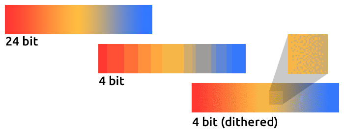

var atlas:TextureAtlas = ...;
var hero:Texture = atlas.getTexture("hero");
atlas.dispose(); // will invalidate "hero" as well.Memory Management
Many Starling developers use the framework to create apps and games for mobile devices. And almost all of those developers will sooner or later find out (the hard way) that mobile devices are notoriously low on memory. Why is that?
-
Most mobile devices have screens with extremely high resolutions.
-
2D games for such devices require equally high resolution textures.
-
The available RAM is too small to hold all that texture data.
In other words, a really vicious combination.
What happens if you do run out of memory? Most of the time, you will get the famous error 3691 ("Resource limit for this resource type exceeded") and your app will crash. The following hints will show you ways to avoid this nasty error!
Dispose your Waste
When you don’t need an object any longer, don’t forget to call dispose on it.
Different to conventional OpenFL and Haxe objects, the garbage collector will not clean up any Stage3D resources!
You are responsible for that memory yourself.
Textures
Those are the most important objects you need to take care of. Textures will always take up the biggest share of your memory.
Starling tries to help you with this, of course. For example, when you load your textures from an atlas, you only need to dispose the atlas, not the actual SubTextures. Only the atlas requires GPU memory, the "offspring" textures will just reference the atlas texture.
Display Objects
While display objects themselves do not require a lot of graphics memory (some do not require any at all), it’s a good practice to dispose them, too. Be especially careful with "heavy" objects like TextFields.
Display object containers will take care of all their children, as is to be expected. When you dispose a container, all children will be disposed automatically.
var parent:Sprite = new Sprite();
var child1:Quad = new Quad(100, 100, Color.RED);
var child2:Quad = new Quad(100, 100, Color.GREEN);
parent.addChild(child1);
parent.addChild(child2);
parent.dispose(); // will dispose the children, tooAll in all, though, recent Starling versions have become more forgiving when it comes to disposing display objects. Most display objects do not store Stage3D resources any longer, so it’s not a catastrophe if you forget to dispose one.
Images
Here’s the first pitfall: disposing an image will not dispose its texture.
var texture:Texture = Texture.fromBitmapData(/* ... */);
var image:Image = new Image(texture);
image.dispose(); // will NOT dispose texture!That’s because Starling can’t know if you’re using this texture anywhere else! After all, you could have other images that use the same texture.
On the other hand, if you know that the texture is not used anywhere else, get rid of it.
image.texture.dispose();
image.dispose();Filters
Fragment filters are a little delicate, too. When you dispose an object, the filter will be disposed, as well:
var object:Sprite = createCoolSprite();
object.filter = new BlurFilter();
object.dispose(); // will dispose filterBut watch out: the following similar code will not dispose the filter:
var object:Sprite = createCoolSprite();
object.filter = new BlurFilter();
object.filter = null; // filter will *not* be disposedAgain, the reason is that Starling can’t know if you want to use the filter elsewhere.
However, in practice, this is not a problem. The filter is not disposed, but Starling will still clean up all its resources. So you won’t create a memory leak.
| In previous Starling versions (< 2.0), this did create a memory leak. |
Load Textures On Demand
We already saw in the Context Loss section that storing many bitmaps in memory for textures has some serious downsides in Starling (or Stage3D in general). It comes down to this: each texture will be in memory at least two times: once in conventional memory, once in GPU memory.
// this bitmap asset should be defined in project.xml
// <assets path="assets/hero.png"/>
var bitmapData:BitmapData = Assets.getBitmapData("assets/hero.png"); (1)
var texture:Texture = Texture.fromBitmapData(Hero); (2)| 1 | The class is stored in conventional memory. |
| 2 | The texture is stored in graphics memory. |
The only way to guarantee that the texture is really only stored in graphics memory is by loading it from an URL. If you use the AssetManager for this task, that’s not even a lot of work.
var appDir:File = File.applicationDirectory;
var assets:AssetManager = new AssetManager();
assets.enqueue(appDir.resolvePath("assets/textures"));
assets.loadQueue(/* ... */);
var texture:Texture = assets.getTexture("hero");Use RectangleTextures
Starling’s Texture class is actually just a wrapper for two Stage3D classes:
openfl.display3D.textures.Texture-
Available in all profiles. Supports mipmaps and wrapping, but requires side-lengths that are powers of two.
openfl.display3D.textures.RectangleTexture-
Available beginning with
BASELINEprofile. No mipmaps, no wrapping, but supports arbitrary side-lengths.
The former (Texture) has a strange and little-known side effect: it will always allocate memory for mipmaps, whether you need them or not.
That means that you will waste about one third of texture memory!
Thus, it’s preferred to use the alternative (RectangleTexture).
Starling will use this texture type whenever possible.
However, it can only do that if you run at least in BASELINE profile, and if you disable mipmaps.
The first requirement can be fulfilled by picking the best available Context3D profile.
That happens automatically if you use Starling’s default constructor.
// init Starling like this:
... = new Starling(Game, stage);
// that's equivalent to this:
... = new Starling(Game, stage, null, null, "auto", "auto");The last parameter (auto) will tell Starling to use the best available profile.
This means that if the device supports RectangleTextures, Starling will use them.
As for mipmaps: they will only be created if you explicitly ask for them.
Some of the Texture.from… factory methods contain such a parameter, and the AssetManager features a useMipMaps property.
Per default, they are always disabled.
Use ATF Textures
We already talked about ATF Textures previously, but it makes sense to mention them again in this section. Remember, the GPU cannot make use of JPG or PNG compression; those files will always be decompressed and uploaded to graphics memory in their uncompressed form.
Not so with ATF textures: they can be rendered directly from their compressed form, which saves a lot of memory. So if you skipped the ATF section, I recommend you take another look!
The downside of ATF textures is the reduced image quality, of course. But while it’s not feasible for all types of games, you can try out the following trick:
-
Create your textures a little bigger than what’s actually needed.
-
Now compress them with the ATF tools.
-
At runtime, scale them down to their original size.
You’ll still save a quite a bit of memory, and the compression artifacts will become less apparent.
Use 16 bit Textures
If ATF textures don’t work for you, chances are that your application uses a comic-style with a limited color palette. I’ve got good news for you: for these kinds of textures, there’s a different solution!
-
The default texture format (
Context3DTextureFormat.BGRA) uses 32 bits per pixel (8 bits for each channel). -
There is an alternative format (
Context3DTextureFormat.BGRA_PACKED) that uses only half of that: 16 bits per pixel (4 bits for each channel).
You can use this format in Starling via the format argument of the Texture.from… methods, or via the AssetManager’s textureFormat property.
This will save you 50% of memory!
Naturally, this comes at the price of a reduced image quality. Especially if you’re making use of gradients, 16 bit textures might become rather ugly. However, there’s a solution for this: dithering!

Figure 1. Dithering can conceal a reduced color depth.
To make it more apparent, the gradient in this sample was reduced to just 16 colors (4 bits). Even with this low number of colors, dithering manages to deliver an acceptable image quality.
Most image processing programs will use dithering automatically when you reduce the color depth. TexturePacker has you covered, as well.
The AssetManager can be configured to select a suitable color depth on a per-file basis.
var assets:AssetManager = new AssetManager();
// enqueue 16 bit textures
assets.textureOptions.format = Context3DTextureFormat.BGRA_PACKED;
assets.enqueue(/* ... */);
// enqueue 32 bit textures
assets.textureOptions.format = Context3DTextureFormat.BGRA;
assets.enqueue(/* ... */);
// now start the loading process
assets.loadQueue(/* ... */);Avoid Mipmaps
Mipmaps are downsampled versions of your textures, intended to increase rendering speed and reduce aliasing effects.
Figure 2. Sample of a texture with mipmaps.
Since version 2.0, Starling doesn’t create any mipmaps by default. That turned out to be the preferable default, because without mipmaps:
-
Textures load faster.
-
Textures require less texture memory (just the original pixels, no mipmaps).
-
Blurry images are avoided (mipmaps sometimes become fuzzy).
On the other hand, activating them will yield a slightly faster rendering speed when the object is scaled down significantly, and you avoid aliasing effects (i.e. the effect contrary to blurring).
To enable mipmaps, use the corresponding parameter in the Texture.from… methods.
Use Bitmap Fonts
As already discussed, TextFields support two different kinds of fonts: TrueType fonts and Bitmap Fonts.
While TrueType fonts are very easy to use, they have a few downsides.
-
Whenever you change the text, a new texture has to be created and uploaded to graphics memory. This is slow.
-
If you’ve got many TextFields or big ones, this will require a lot of texture memory.
Bitmap Fonts, on the other hand, are
-
updated very quickly and
-
require only a constant amount of memory (just the glyph texture).
That makes them the preferred way of displaying text in Starling. My recommendation is to use them whenever possible!
| Bitmap Font textures are a great candidate for 16 bit textures, because they are often just pure white that’s tinted to the actual TextField color at runtime. |
Optimize your Texture Atlas
It should be your top priority to pack your texture atlases as tightly as possible. Tools like TexturePacker have several options that will help with that:
-
Trim transparent borders away.
-
Rotate textures by 90 degrees if it leads to more effective packing.
-
Reduce the color depth (see above).
-
Remove duplicate textures.
-
etc.
Make use of this! Packing more textures into one atlas not only reduces your overall memory consumption, but also the number of draw calls (more on that in the next chapter).
Keep an Eye on the Statistics Display
The statistics display (available via starling.showStats) includes information about both conventional memory and graphics memory.
It pays off to keep an eye on these values during development.
Granted, the conventional memory value is often misleading — you never know when the garbage collector will run. The graphics memory value, on the other hand, is extremely accurate. When you create a texture, the value will rise; when you dispose a texture, it will decrease — immediately.
Actually, just about five minutes after I added this feature to Starling, I had already found the first memory leak — in the demo app. I used the following approach:
-
In the main menu, I noted down the used GPU memory.
-
Then I entered the demos scenes, one after another.
-
Each time I returned to the main menu, I checked if the GPU memory had returned to the original value.
-
After returning from one of the scenes, that value was not restored, and indeed: a code review showed that I had forgotten to dispose one of the textures.

Figure 3. The statistics display shows the current memory usage.
The simple fact that the statistics display is always available makes it possible to find things that would otherwise be easily overlooked.